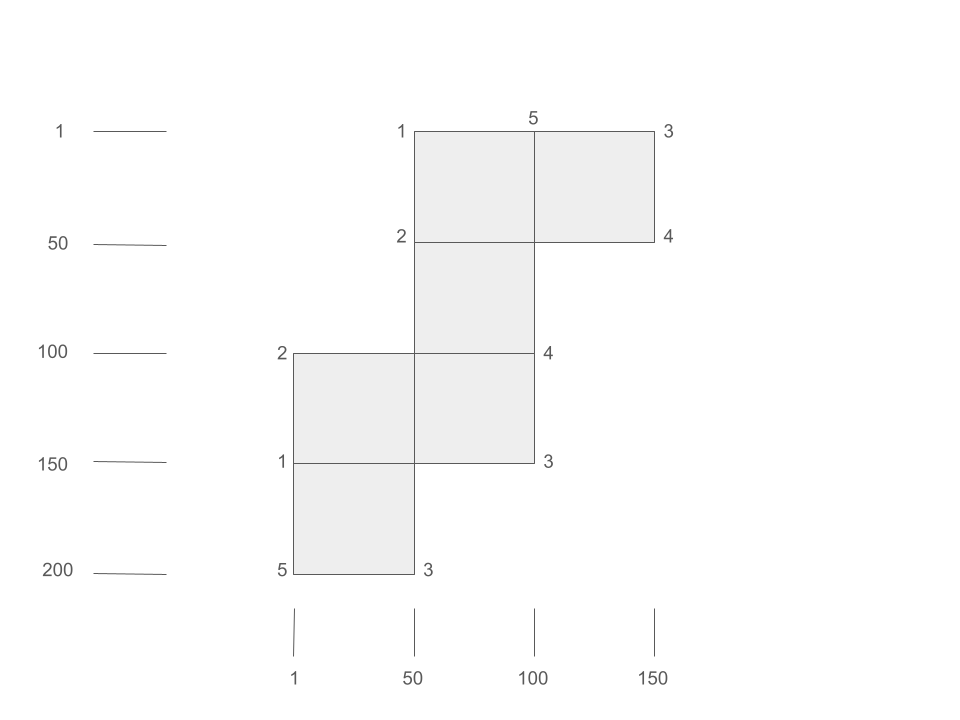

library(readr)
library(stringr)
library(purrr)
options(scipen = 999)
filepath <- here::here("./posts/data/aoc/day22_input.txt")
#filepath <- here::here("./posts/data/aoc/day22_test.txt")
input_map <- read_lines(filepath, skip_empty_rows = FALSE)Find route along a cube-shaped map
Introduction
This post explains my solution to the Advent of Code problem from Day 22. A map is provided consisting of open tiles “.” and solid walls “#” as shown below. The goal is the traverse the map using a set of provided instructions which is shown on the last line of the figure below. The instructions consist of alternating list consisting of numbers and letters (only R or L). Each number is the number of steps to take in the current direction. The letter is the direction to turn where R is to turn 90 degrees clockwise from your current direction and L is to turn 90 degrees counter-clockwise from your current direction.
...#
.#..
#...
....
...#.......#
........#...
..#....#....
..........#.
...#....
.....#..
.#......
......#.
10R5L5R10L4R5L5Loading the input file
The input file begins with the map followed by a blank line and then a line containing the instructions similar to what is shown in the example above. The read_lines function from the readr package is used to read the input file.
Constructing the map
The end of the map is followed by a blank line. The first command identifies this location. The next set of commands extracts the map lines and calculates the size of the map grid in a matrix. The map_path or set of instructions is then extracted. The matrix for the map is then created by merging the data from each input line.
#Setup the map
blank_line <- (map(input_map, \(x) nchar(x)) ) |> unlist() |> list(. = _) |> with(which(. == 0))
map_grid <- input_map[1:(blank_line-1)]
map_nrow <- length(map_grid)
map_ncol <- map(map_grid, \(x) nchar(x)) |> unlist() |> max()
map_path <- input_map[(blank_line+1):length(input_map)]
#Create the map
m <- matrix(data = rep(" ", map_nrow * map_ncol), nrow = map_nrow, ncol = map_ncol)
for (i in 1:nrow(m)) {
row_data <- str_split_1(map_grid[i], "")
m[i, 1:length(row_data)] <- row_data
}Part 1 Solution
The goal for Part 1 is to find the ending location after following the instructions provided. The first step is to find the starting location which is the upper-leftmost open tile by skipping any leading empty spaces on the map.
#Find starting point on map
r <- 1
c <- 1
d <- list(r = 0, c = 1)
#dr <- 0
#dc <- 1
while (m[r, c] != ".") {
c <- c + 1
}The instructions are parsed and iterated until the end. A regular expression is used to extract each number and letter pair. The steps (x) are not counted in areas with empty spaces and the map wraps around when the open tiles are exceeded in a given direction. The steps continue until reaching the desired number or until a wall is reached. At this point the change in direction (y) is applied.
for (a in unlist(str_extract_all(map_path, "\\d+[RL]?"))) {
x <- as.integer(str_extract(a, "\\d+"))
y <- str_extract(a, "[RL]")
for (i in 1:x) {
#n is for next row and column
n <- list(r = r, c = c)
#get out of the map void
while (TRUE) {
n$r <- ifelse((n$r + d$r) %% map_nrow == 0, map_nrow, (n$r + d$r) %% map_nrow)
n$c <- ifelse((n$c + d$c) %% map_ncol == 0, map_ncol, (n$c + d$c) %% map_ncol)
if (m[n$r, n$c] != " ") break
}
if (m[n$r, n$c] == "#") break
r <- n$r
c <- n$c
}
if (is.na(y)) {
next
} else if (y == "R") {
d <- list(r = d$c, c = -d$r)
} else if (y == "L") {
d <- list(r = -d$c, c = d$r)
}
}
print(paste(r, c, d$r, d$c))[1] "190 16 0 -1"For the input file, the ending location is on row 190 and column 16. The ending direction is -1 in the column direction which is left. The final score is calculated as the row position multiplied by 1000 plus the column position multiplied by 4 plus the direction score (0 for right, 1 for down, 2 for left, 3 for up).
#scoring for different directions as specified by the puzzle
calc_score <- function(r, c, d) {
if (d$r == 0 & d$c == 1) {
dir_score <- 0
} else if (d$r == 1 & d$c == 0) {
dir_score <- 1
} else if (d$r == 0 & d$c == -1) {
dir_score <- 2
} else {
dir_score <- 3
}
#apply final scoring calculation
return(1000 * r + 4 * c + dir_score)
}The puzzle solution for Part 1 was 190066.
Part 2 Solution
In part 2, it is revealed that the map is not a flat, 2-D map but rather is a representation of a 3-D cube. This is shown in the figure below where the connected corners are labeled with numbers and like numbers form a corner of the cube. A scale for the row and column numbers are also provided.
 The change in the code to accommodate the cube is quite tedious. You need to figure out how the edges align to figure out the new location after you crossover from one cube face to the next. This is accomplished through a series of if-else statements to handle each case and provide the new location and direction on the map. The good news is that you no longer need to worry about any “void” spaces. The current direction is also stored in case a wall is encountered during this movement.
#find starting point on map
r <- 1
c <- 1
d <- list(r = 0, c = 1)
while (m[r, c] != ".") {
c <- c + 1
}
for (a in unlist(str_extract_all(map_path, "\\d+[RL]?"))) {
#number of steps
x <- as.integer(str_extract(a, "\\d+"))
#direction change
y <- str_extract(a, "[RL]")
for (i in 1:x) {
n <- list(r = r + d$r, c = c + d$c)
#cache dr and dc
cache <- list(dr = d$r, dc = d$c)
#Handle all the cases of moving from one cube face to another
#case of up 1-5
if (n$r < 1 & n$c > 50 & n$c <= 100 & d$r == -1){
d <- list(r = 0, c = 1)
n <- list(r = n$c + 100, c = 1)
#case of left 1-5
} else if (n$c < 1 & n$r > 150 & n$r <= 200 & d$c == -1) {
d <- list(r = 1, c = 0)
n <- list(r = 1, c = n$r - 100)
#case of up 3-5
} else if (n$r < 1 & n$c > 100 & n$c <= 150 & d$r == -1) {
n <- list(r = 200, c = n$c - 100)
#case of down 3-5
} else if (n$r > 200 & n$c > 0 & n$c <= 50 & d$r == 1) {
n <- list(r = 1, c = n$c + 100)
#case of right 3-4
} else if (n$c > 150 & n$r > 0 & n$r <= 50 & d$c == 1) {
d$c <- -1
n <- list(r = 151 - n$r, c = 100)
#case of right 4-3
} else if (n$c > 100 & n$r > 100 & n$r <= 150 & d$c == 1) {
d$c <- -1
n <- list(r = 151 - n$r, c = 150)
#case of 4 down
} else if (n$r > 50 & n$c > 100 & n$c <= 150 & d$r == 1) {
d <- list(r = 0, c = -1)
n <- list(r = n$c - 50, c = 100)
#case of 4 right
} else if (n$c > 100 & n$r > 50 & n$r <= 100 & d$c == 1) {
d <- list(r = -1, c = 0)
n <- list(r = 50, c = n$r + 50)
#case of 3 down
} else if (n$r > 150 & n$c > 50 & n$c <= 100 & d$r == 1) {
d <- list(r = 0, c = -1)
n <- list(r = n$c + 100, c = 50)
#case of 3 right
} else if (n$c > 50 & n$r > 150 & n$r <= 200 & d$c == 1) {
d <- list(r = -1, c = 0)
n <- list(r = 150, c = n$r - 100)
#case of 2 up
} else if (n$r < 101 & n$c > 0 & n$c <= 50 & d$r == -1) {
d <- list(r = 0, c = 1)
n <- list(r = n$c + 50, c = 51)
#case of 2 left
} else if (n$c < 51 & n$r > 50 & n$r <= 100 & d$c == -1) {
d <- list(r = 1, c = 0)
n <- list(r = 101, c = n$r - 50)
#case of left 1-2
} else if (n$c < 51 & n$r > 0 & n$r <= 50 & d$c == -1) {
d <- list(r = 0, c = 1)
n <- list(r = 151 - n$r, c = 1)
#case of left 2-1
} else if (n$c < 1 & n$r > 100 & n$r <= 150 & d$c == -1) {
d <- list(r = 0, c = 1)
n <- list(r = 151 - n$r, c = 51)
}
#Revert direction if encountering a wall
if (m[n$r, n$c] == "#") {
d <- list(r = cache$dr, c = cache$dc)
break
}
r <- n$r
c <- n$c
}
#apply the direction change
if (is.na(y)) {
next
} else if (y == "R") {
d <- list(r = d$c, c = -d$r)
} else if (y == "L") {
d <- list(r = -d$c, c = d$r)
}
}
print(paste(r, c, d$r, d$c))[1] "134 42 0 -1"The final location for Part 2 is row 134 and column 42 and facing up for a puzzle score of 134170.
Summary
The day 22 puzzle was straightforward after figuring out how to code all of the rules for traversing the map. I performed double-assignments using a list in order to make more compact code in handling the direction and next position variables (d and n). Double-assignment also helped in avoiding the creation of temporary variables to store values as values for rows and columns were exchanged. In Python, double assignment is “built-in” but in R you need to use a list.
Expand for Session Info
─ Session info ───────────────────────────────────────────────────────────────
setting value
version R version 4.4.2 (2024-10-31 ucrt)
os Windows 10 x64 (build 19045)
system x86_64, mingw32
ui RTerm
language (EN)
collate English_United States.utf8
ctype English_United States.utf8
tz America/Chicago
date 2025-02-07
pandoc 3.2 @ C:/Program Files/RStudio/resources/app/bin/quarto/bin/tools/ (via rmarkdown)
quarto 1.5.57 @ C:\\PROGRA~1\\RStudio\\RESOUR~1\\app\\bin\\quarto\\bin\\quarto.exe
─ Packages ───────────────────────────────────────────────────────────────────
! package * version date (UTC) lib source
P purrr * 1.0.2 2023-08-10 [?] CRAN (R 4.4.2)
P readr * 2.1.5 2024-01-10 [?] CRAN (R 4.4.2)
P sessioninfo * 1.2.2 2021-12-06 [?] CRAN (R 4.4.2)
P stringr * 1.5.1 2023-11-14 [?] CRAN (R 4.4.2)
[1] C:/Users/David Zoller/Documents/datadavidz.github.io/renv/library/windows/R-4.4/x86_64-w64-mingw32
[2] C:/Users/David Zoller/AppData/Local/R/cache/R/renv/sandbox/windows/R-4.4/x86_64-w64-mingw32/6698a5f3
P ── Loaded and on-disk path mismatch.
──────────────────────────────────────────────────────────────────────────────